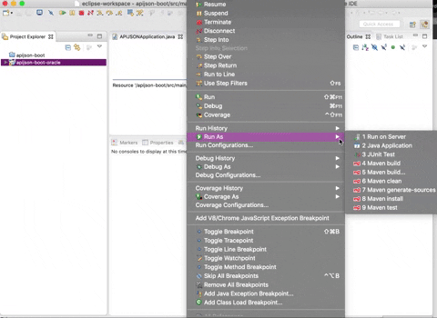

Server-side Deployment¶
This chapter shows how to make installation with Eclipse for JavaEE or IntelllJ IDEA Ultimate. For both, first download the project, unzip it and save it in a directory. you can also clone the project from github:
git clone https://github.com/TommyLemon/APIJSON.git
1. Installing with Eclipse¶
Prerequisites
Java Development Kit(JDK): version 1.8 or above.
MAVEN: version 3.0 or above
Mysql / Oracle
Eclipse Java EE IDE for Web Developers with version: Mars.1 Release (4.5.1)
Opening the project with Eclipse
Open Eclipse, then select File > Import > Maven > Existing Maven Projects > Next > Browse > Select the path of the project > APIJSON-Java-Server > APIJSONBoot > check pom.xml…apijson-demo > Finish
Preparing the library used in demo
In the menu at the right, click libs, then right click apijson-orm.jar, click add as library. Apply the same to the rest of .jar files in libs folder.
Add your own database
If you want to add your own database, open src-main-java-apijson-demo-server-model-DemoSQLConfig.java. In line 40-61, change return values of getDBUri, getDBAccount, getDBPassword, getSchema to your own database.

This is the file that you need to make changes.
@Override
public String getDBUri() {
//TODO: Change the return value to your own
return DATABASE_POSTGRESQL.equalsIgnoreCase(getDatabase()) ? "jdbc:postgresql://localhost:5432/postgres" : "jdbc:mysql://192.168.71.146:3306/";
}
@Override
public String getDBAccount() {
//TODO: Change the return value to your own
return DATABASE_POSTGRESQL.equalsIgnoreCase(getDatabase()) ? "postgres" : "root";
}
@Override
public String getDBPassword() {
//TODO: Change the return value to your own
return DATABASE_POSTGRESQL.equalsIgnoreCase(getDatabase()) ? null : "root";
}
@Override
public String getSchema() {
String s = super.getSchema();
return StringUtil.isEmpty(s, true) ? "thea" : s; //TODO: Change the return value to your own. For here,change "thea" to "your database's name"
}
Running the application
In Eclipse, in the menu on the top, click Run > Run As > Java Application >choose APIJSONApplication > OK
{kind=link}
Then copy and paste link http://localhost:8080/get/{} to your browser to see if it returns the succesful message.
2. Importing database¶
This project needs MySQL Server and MySQLWorkbench. Please make sure that both of them are installed.
My configuration:
Windows 7 + MySQL Community Server 5.7.16 + MySQLWorkbench 6.3.7
OSX EI Capitan + MySQL Community Server 5.7.16 + MySQLWorkbench 6.3.8
Systems and softwares are all 64 bit.
Select MySQLWorkbench > Enter a connection > Click Server menu > Data Import > Select the path of your .sql file > Start Import > Refresh SCHEMAS. Now you should see tables are added successfully.
You can also import demo sql tables in MySQL folder to test the app.

3. Installing with IntellIJ IDEA Ultimate¶
Opening the project¶
Open > Select the path of the project/APIJSON-Java-Server/APIJSONBoot > OK
Preparing the library used in demo¶
In libs, right-click apijson-orm.jar > Add as Library > OK. Apply this to all .jar files in libs.
Running the application¶
In the menu on the top: Run > Run > Edit Configurations > + > Application > Configuration
In Main class, choose APIJSON Application.
In Use classpath of module , choose apijson-demo.
Click Run in the bottom.
Note: After running, you should see test logs and finally, it would show ‘APIJSON已启动’ (APIJSON has launched). If it shows error message‘The address is already in use’, that means port 8080 has been used. You need to change the port. See how to change ports for a Spring Boot Application
Then copy and paste link http://localhost:8080/get/{} to your browser.
If it’s successful it returns with:
{
"code": 200,
"msg": "success"
}